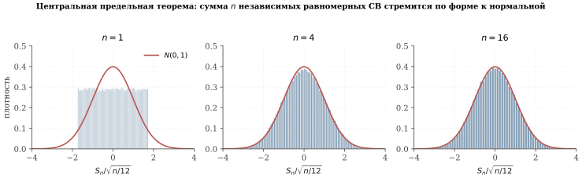
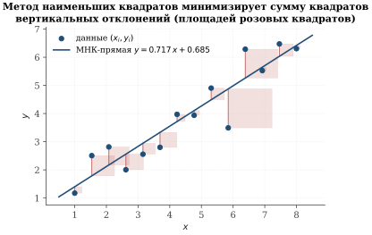
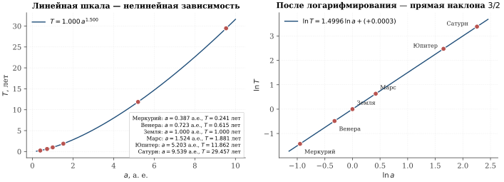
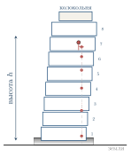
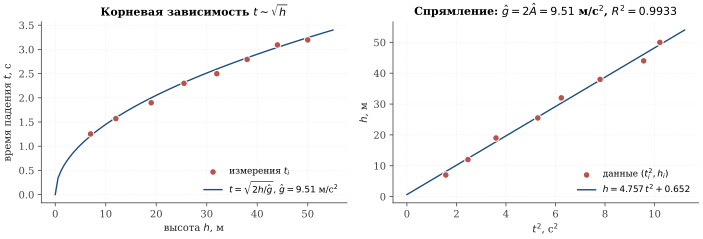

Линейная регрессия и метод наименьших квадратов
В предыдущем параграфе мы оценивали скалярную величину \mu: вес быка, долю голосов, площадь множества. На практике куда чаще встречается другая постановка: мы хотим выяснить, как одна величина зависит от другой. Период обращения планеты от радиуса её орбиты. Время падения от высоты. Цена квартиры от её площади. Доход компании от числа сотрудников.
Простейшая модель такой зависимости — линейная. И именно её мы и будем сейчас изучать.
Постановка задачи
Дано: n пар чисел (x_1,y_1),\dots,(x_n,y_n) — результат измерений. Будем считать, что они связаны (приближённо!) линейной зависимостью
\tag{3.15} y_i\;=\;a\,x_i+b+\xi_i,\qquad i=1,\dots,n,
где
a,\,b — неизвестные коэффициенты, которые предстоит определить;
\xi_i — случайные ошибки измерений (или просто «отклонения от точной линейной зависимости», вызванные тем, что в природе идеально линейных зависимостей не бывает).
Задача линейной регрессии — найти такие \hat a,\,\hat b, чтобы прямая y=\hat a x+\hat b как можно лучше описывала наши данные.
Метод наименьших квадратов как ОМП при гауссовом шуме
Какой смысл вкладывать в слова «как можно лучше»? Эту неопределённость снимает принцип максимума правдоподобия из параграфа 3.1. Предположим, что ошибки \xi_i независимы и имеют нормальное распределение \mathcal N(0,\sigma^{2}). Тогда из модели (3.15) следует, что и каждое y_i нормально распределено — с математическим ожиданием a x_i+b и дисперсией \sigma^{2}. Совместная плотность выборки:
L(a,b)\;=\;\prod_{i=1}^{n}\frac{1}{\sigma\sqrt{2\pi}} \exp\!\left(-\frac{(y_i-a x_i-b)^{2}}{2\sigma^{2}}\right).
Логарифмируем и оставляем только слагаемые, зависящие от a,b:
\tag{3.16} \ln L(a,b)\;=\;C\;-\;\frac{1}{2\sigma^{2}}\sum_{i=1}^{n}(y_i-ax_i-b)^{2},
C — константа, нам не интересная. Максимизация \ln L по (a,b) эквивалентна минимизации функционала
\tag{3.17} \;\;S(a,b)\;=\;\sum_{i=1}^{n}\bigl(y_i-a x_i-b\bigr)^{2}\longrightarrow\min_{a,b}.\;\;
Это и есть знаменитый метод наименьших квадратов (МНК, англ. Ordinary Least Squares, OLS).
По теореме Гаусса (3.6), сумма квадратов — это единственный выбор функционала ошибки, при котором ОМП параметра \mu=a x+b соответствует гауссовскому шуму. Замените квадраты на модули |y_i-ax_i-b| — и вы будете неявно предполагать лапласовское распределение ошибок. Замените на четвёртую степень — и неявно предположите ещё более «острое» распределение. Гауссов шум привилегирован тем, что он естественно возникает в природе, когда ошибка — результат сложения большого числа независимых малых факторов.
Почему шум часто оказывается нормальным
Прежде чем считать формулы, разберёмся с предположением \xi_i\sim \mathcal N(0,\sigma^{2}). Откуда такая уверенность? Дело в двух свойствах нормального распределения, которые делают его «магнитом» в теории вероятностей.
Свойство 1: устойчивость относительно суммирования. Если \eta_1\sim\mathcal N(\mu_1,\sigma_1^{2}) и \eta_2\sim\mathcal N(\mu_2,\sigma_2^{2}) независимы, то их сумма снова нормальна: \eta_1+\eta_2\sim\mathcal N(\mu_1+\mu_2,\,\sigma_1^{2}+\sigma_2^{2}). Доказательство (через характеристические функции или прямой подсчёт свёртки плотностей) выходит за рамки школьной программы, но факт стоит запомнить: нормальное распределение — это «алгебраически самосогласованный» класс. Большинство других распределений после суммирования меняет форму, а нормальное — нет.
Свойство 2: ЦПТ. Гораздо более глубокий факт — центральная предельная теорема (3.3): сумма большого числа независимых случайных величин (любой природы, лишь бы с конечной дисперсией) распределена приблизительно нормально. В жизни ошибка измерения почти никогда не имеет одной-единственной природы: на неё влияют тепловые колебания прибора, вибрации, нечёткость зрения наблюдателя, погрешность шкалы, изменения освещённости и многое другое. Каждый из этих факторов даёт маленькую случайную поправку, а их сумма — по ЦПТ — получается почти нормальной (рис. 3.8).

Поэтому, когда мы пишем «шум измерения — нормальный», за этим стоят два обоснования: ЦПТ говорит, что природа благосклонна к гауссовскому шуму; а теорема Гаусса (3.6) говорит, что, выбрав МНК как метод оценки, мы автоматически предполагаем именно такой шум.
Решение задачи МНК. Принцип Ферма
Найдём минимум функции S(a,b) из (3.17). Это функция от двух переменных. По принципу Ферма (известному из главы 2), в точке минимума обе частные производные обращаются в ноль:
\tag{3.18} \frac{\partial S}{\partial a}\;=\;0,\qquad \frac{\partial S}{\partial b}\;=\;0.
Вычислим частные производные явно:
\begin{aligned} \frac{\partial S}{\partial a} &=\sum_{i=1}^{n}\frac{\partial}{\partial a}(y_i-a x_i-b)^{2} =\sum_{i=1}^{n}2(y_i-a x_i-b)\cdot(-x_i) =-2\sum_{i=1}^{n}x_i(y_i-a x_i-b),\\[2pt] \frac{\partial S}{\partial b} &=\sum_{i=1}^{n}2(y_i-a x_i-b)\cdot(-1) =-2\sum_{i=1}^{n}(y_i-a x_i-b). \end{aligned}
Приравнивание обеих производных нулю даёт систему нормальных уравнений:
\begin{aligned} a\sum_{i=1}^{n}x_i^{2}+b\sum_{i=1}^{n}x_i &=\sum_{i=1}^{n}x_i y_i,\\ a\sum_{i=1}^{n}x_i+b\,n &=\sum_{i=1}^{n}y_i. \end{aligned}
Обозначим выборочные средние \bar x=\frac{1}{n}\sum x_i, \bar y=\frac{1}{n}\sum y_i. Делим (3.20) на n: a\bar x+b=\bar y, откуда
\tag{3.21} \;\hat b\;=\;\bar y-\hat a\,\bar x.\;
Это означает, что прямая y=\hat a x+\hat b всегда проходит через «центр масс» данных (\bar x,\bar y).
Подставляем \hat b в (3.19) и после простых преобразований (умножаем (3.20) на \bar x и вычитаем из (3.19)) получаем
\tag{3.22} \;\hat a\;=\;\dfrac{\sum_{i=1}^{n}(x_i-\bar x)(y_i-\bar y)}{\sum_{i=1}^{n}(x_i-\bar x)^{2}}.\;
Числитель — так называемая ковариация выборок x и y (точнее, n раз ковариация), знаменатель — n раз выборочная дисперсия x. Формулы (3.21), (3.22) — основной рабочий инструмент простой линейной регрессии.
МНК минимизирует сумму квадратов вертикальных расстояний от точек данных до прямой — не перпендикулярных и не горизонтальных, а именно вертикальных (рис. 3.9). Это связано с тем, что в модели (3.15) мы считаем, что значение x_i — точное (точка на оси абсцисс), а вся неопределённость сосредоточена в y_i. Если, напротив, ошибки есть и в x, и в y, на смену МНК приходит так называемый общий МНК (Total Least Squares), минимизирующий перпендикулярные расстояния.

Возьмём шесть точек: (1,2{,}1), (2,3{,}9), (3,5{,}8), (4,8{,}3), (5,10{,}0), (6,11{,}9). Считаем по (3.21), (3.22):
\bar x=3{,}5,\quad \bar y=7{,}0,\quad \sum(x_i-\bar x)^{2}=17{,}5,\quad \sum(x_i-\bar x)(y_i-\bar y)=34{,}90.
Откуда \hat a=34{,}90/17{,}5\approx 1{,}99 и \hat b=7{,}0-1{,}99\cdot 3{,}5\approx 0{,}02. Регрессионная прямая: \hat y\approx 1{,}99\,x+0{,}02 — то есть данные «выложены вдоль» зависимости y\approx 2x.
Пример 1. III закон Кеплера по данным Тихо Браге
В качестве первого «настоящего» применения МНК разберём задачу, с которой началась современная физика. К XVI веку астрономы уже умели определять для каждой планеты:
период обращения T (за сколько лет планета возвращается на ту же точку звёздного неба), и
средний радиус орбиты a — большую полуось эллипса.
Тихо Браге (1546–1601), один из величайших астрономов-наблюдателей доньютоновской эпохи, посвятил всю жизнь точнейшим наблюдениям движения планет с помощью огромных угломерных инструментов на острове Вен (Дания). После его смерти эти таблицы достались его помощнику — молодому немцу Иоганну Кеплеру (1571–1630), который потратил два десятилетия на их интерпретацию.
Тихо Браге — величайший астроном-наблюдатель домикроскопной эпохи. Точность его измерений угловых положений планет составляла \sim\!1' (угловая минута) — предел для невооружённого глаза. К концу жизни он накопил каталог из почти тысячи звёзд и подробнейшие записи о движении пяти видимых планет за 21 год.
Кеплер унаследовал эти таблицы и в 1605 г. открыл первый закон движения планет: каждая планета движется по эллипсу, в одном из фокусов которого находится Солнце. В 1609 г. он добавил второй: радиус-вектор планеты заметает равные площади за равные времена. А в 1619 г. (в трактате Harmonices Mundi, «Гармонии мира») он опубликовал третий закон: квадраты периодов обращения относятся как кубы больших полуосей. Сам Кеплер выписал этот закон в форме T^{2}\sim a^{3}, не зная ни логарифмов в общеупотребительном виде, ни тем более понятия регрессии. Но именно на «эпохе Браге–Кеплера» данные впервые позволили установить количественный закон одного астрономического параметра как функции другого.
Постановка как задача регрессии. Подозреваем степенную зависимость T=C\cdot a^{\beta}. Логарифмируя обе части, получаем линейную зависимость в логарифмических осях:
\tag{3.23} \lg T\;=\;\beta\,\lg a\;+\;\lg C.
Обозначим x_i=\lg a_i, y_i=\lg T_i. Это уже стандартная задача линейной регрессии — ищем \hat\beta и \widehat{\lg C} по формулам (3.22), (3.21).
Данные. Шесть планет, известных Кеплеру (значения близки к тем, что использовал он сам, но приведены в современных единицах):
| Планета | a, а. е. | T, лет | \lg a | \lg T |
|---|---|---|---|---|
| Меркурий | 0,3871 | 0,2408 | -0{,}4122 | -0{,}6183 |
| Венера | 0,7233 | 0,6152 | -0{,}1407 | -0{,}2110 |
| Земля | 1,0000 | 1,0000 | 0 | 0 |
| Марс | 1,5237 | 1,8809 | 0,1829 | 0,2744 |
| Юпитер | 5,2034 | 11,862 | 0,7163 | 1,0742 |
| Сатурн | 9,5371 | 29,457 | 0,9794 | 1,4692 |
Расчёт МНК. Программа из десяти строк (или подсчёт «вручную» по формулам (3.22), (3.21)) даёт:
\tag{3.24} \hat\beta\;=\;1{,}4999628\dots,\qquad \widehat{\lg C}\;=\;-0{,}00003\dots,\qquad R^{2}\;=\;0{,}99999996.
Коэффициент \hat\beta совпадает с 3/2 с точностью до четвёртого знака после запятой. Это и есть III закон Кеплера:
\;\;T^{2}\;=\;C\cdot a^{3},\qquad C\approx 1\;(\text{в единицах год/а.\,е.}^{3/2}).\;\;
Это соотношение и графическое спрямление данных Кеплера в двойной логарифмической шкале показаны на рис. 3.10.

Кеплер не имел в распоряжении ни МНК (его открыли через 100 лет: Лежандр — в 1805 г., Гаусс — в 1809 г.), ни графиков логарифмов в современном виде. Он подбирал зависимость руками, сравнивая отношения. После многомесячных проб он заметил, что T^{2}_{\text{Юпитер}}/T^{2}_{\text{Земля}}\approx 140{,}7 и a^{3}_{\text{Юпитер}}/a^{3}_{\text{Земля}}\approx 140{,}9 — почти равенство. Сегодня та же зависимость устанавливается за десяток строк кода — но идею Кеплера это не уменьшает. Напротив, наглядно показывает, насколько мощным инструментом стал МНК для последующих поколений физиков.
Пример 2. Ускорение свободного падения по данным Галилея
Галилео Галилей (1564–1642) стоял у истоков физики как экспериментальной науки. Его трактат «Беседы и математические доказательства, касающиеся двух новых отраслей науки» (1638) изложил закон свободного падения: пройденный путь пропорционален квадрату времени падения,
\tag{3.25} h\;=\;\frac{g}{2}\,t^{2},
где g — ускорение свободного падения. Историки до сих пор спорят, на самом ли деле Галилей сбрасывал предметы с Пизанской башни (свидетельства его ученика Винченцо Вивиани, написанные через десятки лет, ставятся под сомнение). Но даже как «мысленный эксперимент» этот сюжет великолепно подходит, чтобы продемонстрировать МНК на ещё одной задаче (рис. 3.11).

Регрессионная модель. Записывать t через h напрямую нельзя (получится корень):
t\;=\;\sqrt{\frac{2 h}{g}}.
Поэтому регрессия выписывается для обратной зависимости — высота от квадрата времени:
\tag{3.26} h\;=\;\frac{g}{2}\,t^{2}+\xi.
Введя X=t^{2}, Y=h и A=g/2, получаем линейную модель Y=AX+\xi — частный случай (3.15) с b=0. (Свободный член можно оставить и формально — он покажет систематическую погрешность типа «реакции экспериментатора при пуске секундомера»; см. ниже.)
«Данные». Воспроизведём эксперимент в духе Discorsi. Высоты ярусов Пизанской башни (приблизительно): 7, 12, 19, 25{,}5, 32, 38, 44, 50 м над землёй. Для каждой высоты «измеряем» время падения — настоящий Галилей использовал водяные часы (взвешивал воду, вытекшую за время падения!) с типичной погрешностью около \sigma\sim 0{,}05 секунды на одно измерение. Получим набор пар (h_i,t_i):
| i | h_i, м | t_i, с (измерено) | t_i^{2}, с^{2} |
|---|---|---|---|
| 1 | 7,0 | 1,253 | 1,569 |
| 2 | 12,0 | 1,570 | 2,465 |
| 3 | 19,0 | 1,897 | 3,597 |
| 4 | 25,5 | 2,299 | 5,287 |
| 5 | 32,0 | 2,497 | 6,235 |
| 6 | 38,0 | 2,793 | 7,799 |
| 7 | 44,0 | 3,092 | 9,562 |
| 8 | 50,0 | 3,196 | 10,213 |
Расчёт МНК. Применяем формулы (3.22), (3.21) к парам (t_i^{2},h_i): \hat A\approx 4{,}757, \hat b\approx 0{,}653. Отсюда
\hat g\;=\;2\hat A\;\approx\;9{,}51\;\text{м/с}^{2},
при «истинном» значении g=9{,}81 м/с^{2}. Относительная погрешность \sim\!3\,\% — абсолютно реалистичный результат для экспериментатора XVII века с водяными часами. Коэффициент детерминации R^{2}\approx 0{,}9932 — то есть модель объясняет более 99\,\% дисперсии в данных (рис. 3.12).

И в задаче Кеплера, и в задаче Галилея исходная зависимость — не линейная (T=Ca^{3/2}, t=\sqrt{2h/g}). Прежде чем применить МНК, мы её линеаризуем: берём логарифм у Кеплера и квадрат t у Галилея. Это очень распространённый трюк: подбор показателя степени, экспоненциальный рост, степенные законы — все они сводятся к линейной регрессии заменой переменных.
Однако с этим связано важное наблюдение. После замены переменных меняется и распределение шума: гауссов шум на исходных y после взятия логарифма уже не гауссов на \lg y. Поэтому формально «линеаризованная» оценка слегка отличается от ОМП в исходной модели — но в большинстве практических задач отличие незначительно, и линеаризацией пользуются как удобным и универсальным приёмом.
Множественная линейная регрессия (краткий обзор)
В реальных задачах одной входной переменной обычно мало. Цена квартиры зависит одновременно от её площади, расстояния до метро, этажа, года постройки. Время на маршруте — от длины пути, числа светофоров, загруженности, времени суток.
Постановка. Пусть n — число наблюдений, d — число входных признаков. Для i-го наблюдения известны: вектор признаков \mathbf x_i=(x_{i,1},\dots,x_{i,d})\in\mathbb{R}^{d} и значение отклика y_i\in\mathbb{R}. Запишем общую множественную линейную модель:
\tag{3.27} y_i\;=\;w_1 x_{i,1}+w_2 x_{i,2}+\dots+w_d x_{i,d}+w_0+\xi_i, \qquad i=1,\dots,n.
Здесь w_1,\dots,w_d — коэффициенты при признаках, w_0 — свободный член, \xi_i\sim\mathcal N(0,\sigma^{2}) — независимый гауссов шум.
Матричная запись. Соберём матрицу плана X\in\mathbb{R}^{n\times(d+1)}, у которой i-я строка — это (x_{i,1},x_{i,2},\dots,x_{i,d},1) (последняя единица позволяет учесть свободный член w_0 как обычный коэффициент). Вектор параметров \mathbf w=(w_1,\dots,w_d,w_0)^{\top}\in\mathbb{R}^{d+1}, вектор откликов \mathbf y=(y_1,\dots,y_n)^{\top}. Тогда модель компактно записывается одной строкой:
\mathbf y\;=\;X\,\mathbf w+\boldsymbol\xi.
Метод наименьших квадратов. Сумма квадратов ошибок принимает вид
S(\mathbf w)\;=\;\sum_{i=1}^{n}\bigl(y_i-\mathbf x_i^{\top}\mathbf w\bigr)^{2} \;=\;\left\lVert \mathbf y-X\mathbf w \right\rVert^{2},
где для краткости \mathbf x_i^{\top}\mathbf w=x_{i,1}w_1+\dots+x_{i,d}w_d+w_0 (т. е. стандартное скалярное произведение). Приравнивание градиента S нулю даёт систему нормальных уравнений:
\tag{3.28} \;\;(X^{\top}X)\,\hat{\mathbf w}\;=\;X^{\top}\mathbf y\;\;\qquad(\text{нормальные уравнения}).
Если матрица X^{\top}X размера (d+1)\times(d+1) невырождена, отсюда \hat{\mathbf w}=(X^{\top}X)^{-1}X^{\top}\mathbf y. Эта формула — наиболее известная в линейной алгебре статистической оценки.
Условие применимости. Невырожденность X^{\top}X равносильна тому, что столбцы X линейно независимы: ни один признак не является линейной комбинацией других, и число наблюдений не меньше числа признаков (n\geq d+1). Если это не так — решение не единственно, и приходится либо отбирать признаки, либо использовать регуляризацию (см. 3.18).
Пусть для пяти квартир известны площадь x_{i,1} (м^{2}), расстояние до метро x_{i,2} (минуты пешком) и цена y_i (млн руб.):
\begin{array}{c|c|c|c} i & x_{i,1} & x_{i,2} & y_i \\ \hline 1 & 35 & 5 & 9{,}5 \\ 2 & 45 & 12 & 10{,}0 \\ 3 & 60 & 8 & 13{,}5 \\ 4 & 75 & 3 & 17{,}0 \\ 5 & 50 & 20 & 9{,}8 \end{array}
Подставим X\in\mathbb{R}^{5\times 3} (последний столбец из единиц) в формулу (3.28) и численно решим систему. Получим \hat{\mathbf w}\approx(0{,}181,\,-0{,}161,\,3{,}92), то есть
\hat y\;=\;0{,}181\,x_{1}\;-\;0{,}161\,x_{2}\;+\;3{,}92.
Содержательно: каждый дополнительный квадратный метр прибавляет к цене \approx\!181 тыс. руб., каждая дополнительная минута до метро уменьшает цену на \approx\!161 тыс. руб., а свободный член 3{,}92 млн — это «базовая стоимость», когда оба признака равны нулю.
Главная идея. С ростом размерности тип формул не меняется. МНК — универсальный инструмент, одинаково работающий и для одного-единственного признака (Кеплер, Галилей), и для тысячи признаков (модели ценообразования, прогнозирование спроса, физика частиц). Мы вернёмся к этим формулам в параграфе 3.4 при обсуждении малоранговых аппроксимаций матриц.
Резюме параграфа
Метод наименьших квадратов — первый реальный инструмент анализа данных, который мы получили. Его эквивалентность принципу максимума правдоподобия в гауссовой модели делает его универсальным.
На примере Кеплера МНК даёт III закон с точностью до семи знаков: наклон \hat\beta=1{,}49996\approx 3/2. На примере Галилея — ускорение свободного падения \hat g\approx 9{,}51 м/с^{2} при истинном 9{,}81.
Главные идеи, которые мы должны вынести из этого параграфа и которые будут проявляться дальше в более сложных моделях:
Принцип максимума правдоподобия, применённый к модели «параметр плюс гауссов шум», даёт минимизацию суммы квадратов как универсальный функционал ошибки.
Принцип Ферма (приравнивание частных производных к нулю) приводит к системе линейных уравнений, которая называется системой нормальных уравнений.
Зависимость, не являющаяся линейной, часто спрямляется заменой переменных (логарифмирование, возведение в квадрат) и после этого тоже становится задачей МНК.
В следующем параграфе мы шагнём от линейных моделей к существенно нелинейным — нейронным сетям. Принцип максимума правдоподобия и тут останется методологической отправной точкой, но функционал станет сложнее, а вместо аналитического решения нормальных уравнений мы будем использовать численные методы — градиентный спуск и его варианты.
Для точек (1,1{,}2), (2,2{,}3), (3,3{,}5), (4,4{,}3), (5,5{,}1) найдите \hat a,\hat b методом наименьших квадратов. Постройте график «данные + регрессионная прямая».
Выведите формулу (3.22) в явном виде, проделав все преобразования между (3.19) и (3.22).
Кеплер. По данным таблицы выше посчитайте вручную (или с помощью калькулятора) \bar x=\overline{\lg a}, \bar y=\overline{\lg T}, ковариацию и дисперсию, и убедитесь, что МНК даёт \hat\beta\approx 1{,}5.
Галилей. Зачем в (3.26) мы добавили свободный член \xi? Какое физическое явление он моделирует?
Постройте регрессию веса человека (y) от его роста (x) на выборке из 10 ваших знакомых (можно вымышленных). Сравните ваш результат с известной эмпирической формулой Брока y\approx x-100 (см. массой в кг, рост в см).
^{\star} Покажите, что МНК-оценка \hat a из (3.22) несмещённая: \mathbb E[\hat a]=a, если на самом деле y_i=a x_i+b+\xi_i с независимыми ошибками с нулевым математическим ожиданием. Найдите \mathbb D[\hat a].
^{\star} Метод наименьших квадратов с весами. Пусть нам известно, что точность i-го измерения характеризуется собственной дисперсией \sigma_i^{2} (разные приборы — разная погрешность). Покажите, что ОМП-оценка минимизирует взвешенную сумму квадратов \sum_{i}\sigma_i^{-2}(y_i-a x_i-b)^{2}. Найдите для этой задачи аналог формул (3.22), (3.21).